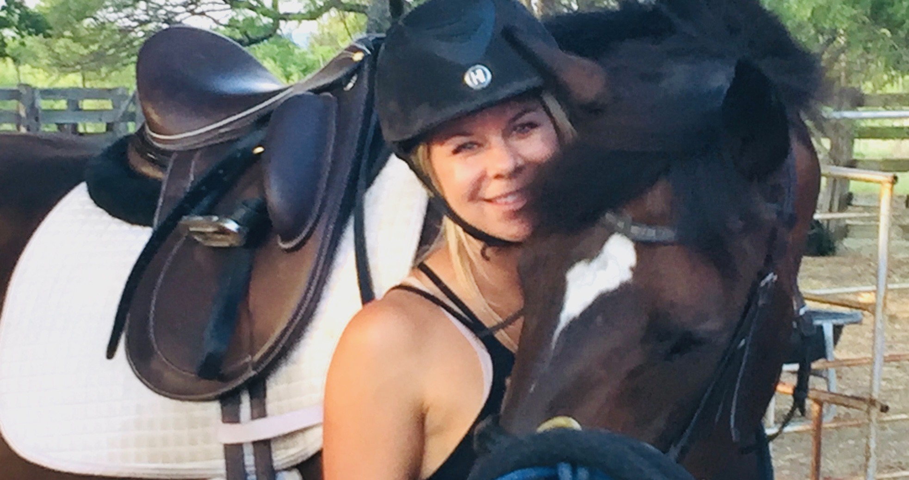
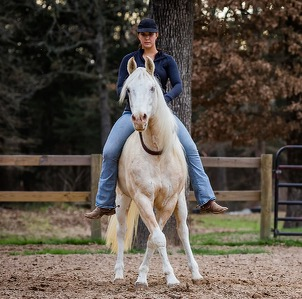
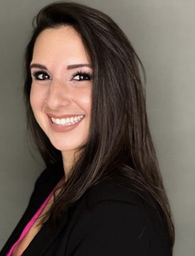

At Equiatude Foundation, our staff is skilled in developing and expanding equine-assisted therapeutic programs to address emotional, physical and behavioral challenges.
Activities offered during our therapy sessions depend somewhat on the clients' needs and comfort level.
We like to focus on:
We often see major breakthroughs with clients otherwise resistant to traditional forms of therapy.
Equestrian activities in and out of a therapeutic setting:
Meet our devoted team of leaders and innovators!
President and Founder

Stephanie Carpenter grew up in Buda, Texas. At 8 years old she began riding horses while working at Twisted Oaks Farm. She spent time showing and training horses until the age of 14 years old. After graduating high school Stephanie began working as a strength and conditioning coach with all ages and athletes. Stephanie soon competed in body building and was awarded with a coveted professional body builder card in her very first competition. She excelled in olympic and power lifting shortly after. In training other women, Stephanie realized how much she enjoyed watching their confidence and self-worth grow as they reached their goals. Truly missing her first passion with horses she integrated the two, training women on the ground how to strengthen, stretch and stabilize their bodies for better riding. Back in the saddle, Stephanie found her new love for thoroughbreds (a specific breed bred for racing). She rescued and retrained 3 thoroughbreds that came off the race track to then find new homes for all but one, Teddy. Rehabilitating Teddy for 9 months while training him, she found her now new passion for the process of seeing previously mishandled horses regain confidence and trust. She also rescued Callie who you will also see assisting our clients. Stephanie again integrated her two passions. Helping horses help women! She founded Equiatude Foundation in March of 2020. Caring so deeply about this cause, she has personally funded most operations to date. Stephanie worked for world renowned classical dressage trainer Will Faerber for one year where she learned how to restore peace in troubled horses using passive confidence without force or aggression. During that time she also worked with AmVets and Dr. Sharon Elefant of Engage the Vision, a nonprofit dedicated to mentoring the inner-city youth of Los Angeles. Her work in helping others has pulled her through many of her own difficult times, which have greatly enhanced her empathy and passion for creating a healing environment for women and animals alike.
Creative Director and Head Trainer

I grew up taking riding lessons near Dallas, Texas, and always knew I wanted to become a horse trainer, even from a young age. The relationships between humans and horses - and how they communicate with one another - have always fascinated me. In pursuing my passion for horsemanship, I studied a variety of different disciplines and training styles, including classical dressage, reining, liberty, and bridleless riding. I have been lucky to have learned hands-on from some really great trainers, a roster of which includes my current mentor Mark Rashid, top equine theatre performers, Grand Prix dressage riders, published authors of horse training books, and touring clinicians. My goal has always been to develop a deeper understanding of and connection with the horse. Throughout the years, my own training career has been focused on helping "problem" or troubled horses. Over time, I have found that horses frequently mirror our internal states of being, and our interactions with horses can serve as catalysts for personal growth and transformation. This has motivated me to not only try to help heal horses but to explore how horses in turn can heal people.
Board Member

Living by the concept of Tikkun Olam, to repair the world, Dr. Sharon Elefant’s priority is to promote and enhance community health, social services and social justice in local, regional, and international communities. Dr. Elefant serves various nonprofit organizations to help them develop strategic plans for fund development, community engagement and private and governmental relationship development. As a consultant to the nonprofit community, Dr. Elefant’s passion is to serve our youth and provide them with educational opportunities through academics and athletics to help them succeed and grow.